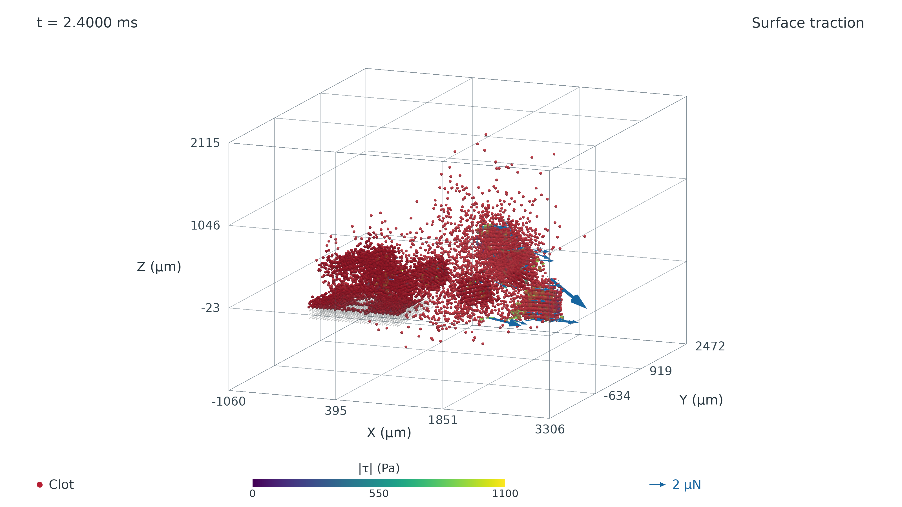
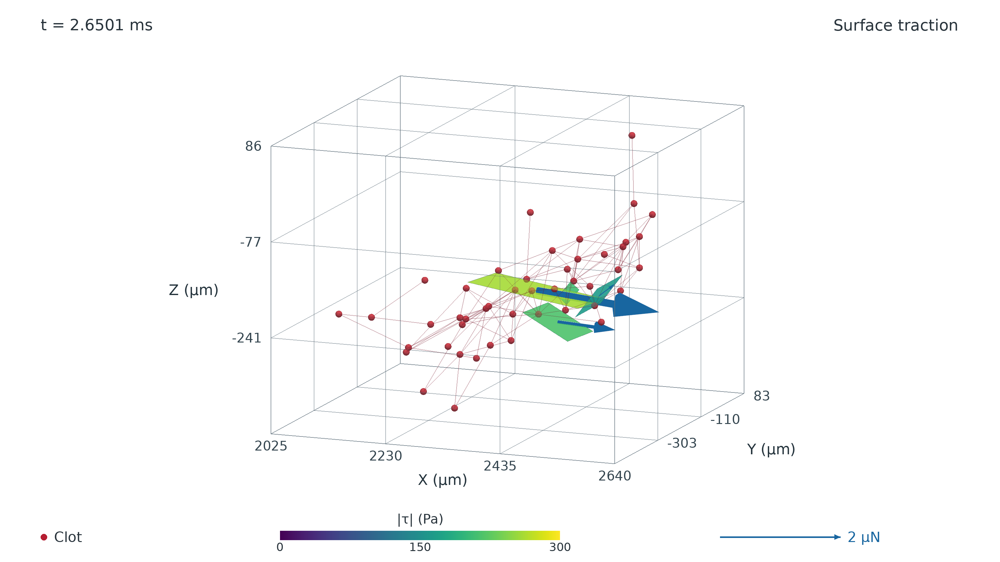

仅显示新 V3 方法的真实保存态。Z 轴竖直，红色材料点，位移 ×1；保留必要时间、坐标、图例及力标尺。
下载 MP4 · 1920×1080，24 fps · 逐帧真实时间与来源

PNG · PDF · 全部有效表面数据 CSV

46 个原始节点、101 条内部存活键、4 个有效 L2 面。
PNG · PDF · 全部有效表面数据 CSV
静态图为 3200×1800。彩色面表示实际表面切向牵引模值（Pa），蓝色箭头表示实际单面合力；2 µN 对应 200 µm 的绘制长度。全景选择部分真实箭头以便阅读，完整载荷见 CSV。表面仍为部分近似求积；本次仅重新可视化，没有新增动力学或流场求解。PDF 内嵌高分辨率栅格图。